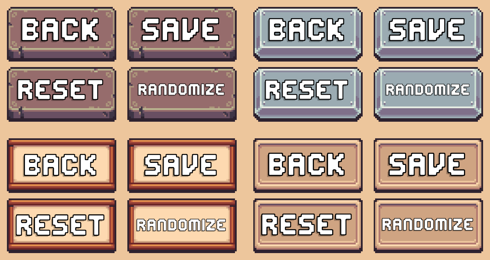

Character Creator Menu Controls
Menu Controls are UI buttons that provide core user actions such as saving, closing, randomizing and reseting a character.
The included prefabs can be quickly added to a Character Creation Menu or replaced with custom implementations using the CCM Relay component.

Included Actions
Menu Controls provide the following actions:
- Close or exit the Character Creation Menu.
- Save or confirm character changes.
- Reset the character to its original state.
- Randomize the characters appearance.
Prefabs
Prefabs Location: Prefabs > Character Creator > Modules > Menu Controls.
Ready-made prefabs are included and can be used without any additional setup. Drag and drop them directly into your Character Creation Menu hierarchy and they're immediately ready to be used.
Variants
Within the prefabs folder you'll see 4 variation folders. The only difference between variants is the sprites used.
Available prefabs:
- Menu Controls [Back, Confirm, Randomize, Reset]
- Menu Controls [Back, Confirm, Randomize]
- Menu Controls [Back, Confirm]
The brackets dictate what actions are included in the prefab.
Generic Buttons
Inside the same prefabs directory, the Generic Buttons folder contains individual button prefabs with no default assigned functionality.
Each prefab includes:
- A UI Button
- A CCM Relay component
When using the generic button prefabs, add an On Click event to the button and assign the CCM Relay component. You can then call different methods on the CCM Relay component to perform actions such as saving changes or exiting the menu.
CCM Relay Component
The CCM Relay (Character Creation Menu Relay) component acts as a bridge between the UI and the Character Creation Menu system.
It forwards button events to the active Character Creation Menu Manager, making it easy to setup simple functionality without writing any code.
Usage
To create a custom button using the CCM Relay:
- Add the
CCM Relaycomponent to a GameObject - Add the Unity
Buttoncomponent - Assign the Buttons On Click event to call a method on the CCM Relay component
Example

CCM Relay Methods
The following public methods are available on the CCM Relay component:
DisableMenu()
Closes the disables the Character Creation Menu.
SaveCharacter()
Saves changes made to the currently edited character.
RandomizeEntireCharacter()
Randomizes all character layers of the character currently being edited.
ResetCharacter()
Restores the character to the state it was in when the Character Creation Menu was first opened.